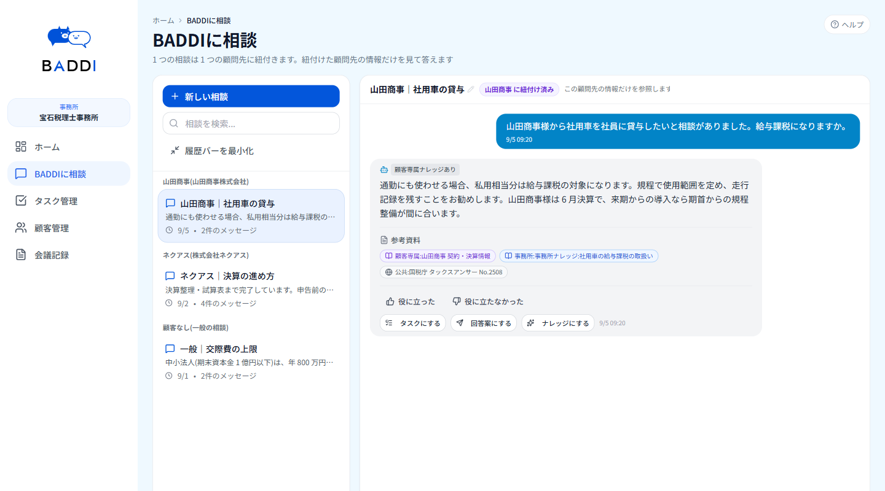

先生の税務経験を、
使うほど賢くなる
「事務所の脳」に。
税理士事務所の業務AI「BADDI」。顧問先ごとの事情、所内の判断基準、国税庁の公開資料を出典つきで引き出します。LINE で届く顧問先の質問も、決算・申告までの工程も、顧問先を軸にひとつの画面で追えます。

税務の判断も業務の進み具合も、
担当者の頭の中にある
税務判断の勘所が人に紐付いている
「この顧問先は例年どう処理したか」「所内ではどう判断するか」。答えはベテランの頭の中にあり、退職や異動とともに事務所から消えてしまいます。
決算・申告の進み具合が見えない
顧問先ごとに決算月も工程も違うのに、進捗は担当者任せ。一人ずつ聞いて回らないと、遅れに気づけません。
税制改正の影響を洗い出しきれない
改正のたびに、影響を受けそうな顧問先を担当者の記憶を頼りに探しています。
顧問先を軸に、
税務の知恵と業務をまとめる
顧問先ごとに分けて答える
相談は必ず一つの顧問先に紐付き、その顧問先の契約・決算情報に、所内の判断基準と国税庁の公開資料を合わせて答えます。他の顧問先の情報が混ざることはありません。
顧問先の連絡も、
決算期の業務も一か所に
LINE・メール・Chatwork の受信、決算・記帳などの工程と期限、「先生確認」の承認待ちを、顧問先ごとに同じ画面で追えます。
所内の判断基準が、
使うほどたまる
確認済みの回答は、ボタン一つで事務所のナレッジに。似た論点の相談が来たとき、出典として使われます。
BADDI がある税理士事務所の一日
顧問先からの連絡、回答、決算期の業務、進み具合の確認まで。一件の相談が、ひとつの画面で最後までつながります。
- 顧問先から連絡LINE・メール・Chatwork
- 受信トレイで紐付けどの顧問先の件か
- BADDIに相談顧問先の情報をふまえて
- 回答案・タスクにワンクリックで
- ナレッジに蓄積次の相談で引用
顧問先から LINE で質問が届いた
LINE・メール・Chatwork で届いた連絡は、ひとつのトレイに集まります。どの顧問先の件かが紐付き、通帳や通知書の写真もその場で確認できます。
- 紐付け先が分からない連絡は「不明（未紐付け）」として保留
- 届いた質問から、そのまま「BADDIに相談」へ
経験が浅くても、根拠をそろえて答えたい
山田商事を選んで「社用車の貸与について相談があった」と入力すると、山田商事の契約・決算情報、所内の判断基準、国税庁の公開資料を出典に回答します。先輩に聞く前に、根拠つきで当たりをつけられます。
- 回答はワンクリックでタスク・回答案・ナレッジに
- 同じ顧問先で複数の相談を管理
決算期、顧問先ごとの工程を遅れなく回したい
決算処理・記帳・所内請求業務などの定例業務は、顧問先の決算月に合わせて工程と期限が自動で並びます。期限が今日か過ぎたタスクは、自動で「緊急」になります。
- 所長の承認が必要な工程に「先生確認」を設定
- 前工程が終わるまで次の工程は「前工程待ち」
- 業務分類・業務進捗表・月別カレンダーで切り替え表示
所長として、事務所全体の進み具合を知りたい
顧問先ごとの決算月、業務の状態、未対応の受信件数を一覧できます。担当者に一人ずつ聞いて回らなくても、遅れている顧問先が分かります。
- 「決算処理：遅延」「先生確認待ち」などを色分け表示
- 決算月の未入力も警告で表示
会議で決まったことを、そのまま担当者のタスクに
会議の要約から TODO を起こして担当者に割り振ります。議事録を読み返して作業を拾い出す手間がなくなります。
改正の影響を受けそうな顧問先を、候補として一覧に
「法令改正」の画面で「分析」を押すと、影響がありそうな顧問先を確認待ちの候補として並べます。該当するかどうかは担当者が確認して決めます。候補の精度は、顧問先ごとの登録情報によって変わります。
画面内の顧問先名・担当者名はすべて架空です。
一度の相談が、次の回答の材料になる
相談が増えるほど、事務所の答えの根拠が厚くなります。ナレッジの検索には、Sparticle の「GBase」を採用しています。
顧問先を選んで相談
職員が顧問先に紐付けて質問
出典つきで回答
どの資料を参照したかを表示
「ナレッジにする」
確認した回答を事務所の知識として保存
次の相談で引用
似た相談の出典として使われる
「安全です」とは書きません。
何をしているかを、そのまま書きます
顧問先の情報をお預かりする以上、仕組みを具体的にお見せします。以下は現在の本番環境で動いている内容です。
AI は判断しません。最後は税理士が確認します
税務の判断と顧問先への回答は、税理士の仕事です。BADDI は調べものと下準備を引き受け、判断と送信は人に残します。
BADDI が引き受けること
調べもの・下準備- 顧問先の資料・所内ナレッジ・公開資料を探し、出典つきで答える
- 回答を回答案やタスクの形に整える
- 定例業務の工程と期限を組み、遅れを知らせる
依頼
税理士・職員が行うこと
判断・承認・送信- 回答案を確認し、顧問先へ送るかどうかを決める
- 「先生確認」の工程で、所長が承認または差し戻す
- 職員の返信は、所長の承認を経て送る設定にもできる
- AI の生成物をもとにした操作は、区別して記録に残る
他の事務所の情報は見えない
データベースへのすべての問い合わせに、共通の仕組みが事務所の識別子を自動で付けます。事務所をまたいで読む経路がありません。
事務所内でも担当先だけ
管理者・税理士・職員・閲覧のみの 4 つの権限に加え、各自が担当する顧問先だけを表示します。
機微な項目は暗号化して保存
AES-256-GCM で暗号化し、鍵はデータベースと分けて管理。電話・住所、e-Tax／eLTAX の暗証番号、メール本文、会議記録などが対象です。
電子申告の暗証番号は特別扱い
画面では伏せ字。表示できるのは担当者と管理者だけで、表示のたびに「誰が・いつ・どの顧問先の」を記録します。CSV 出力にも含めません。
AI 送信前に、個人情報を置換
登録済みの氏名・電話番号・メールアドレスなどを記号に置き換えてから AI に送り、回答を受け取ったあとで元に戻します。登録内容と完全に一致するものが対象で、PDF や写真の中身は含みません。
マイナンバーは自動で伏せ字
新たに保存する内容に含まれるマイナンバーは、自動で伏せ字にします。PDF や写真の中身は対象外です。
誰が・何をしたかを記録
閲覧・変更・削除・メール／LINE 送信・データ出力・承認などを IP アドレスとともに記録。AI の生成物をもとにした操作かどうかも区別します。
データは取り出せて、消せる
顧問先ごとにデータを書き出せます。削除は「非表示」と「完全削除」の二段階で、完全削除の前に消える内容を確認できます。
外部の AI に送る内容
AI を使う以上、一部の情報は外部の AI サービスに送られます。データがどこにあり、どこで止まり、何が外に出るかを図で示します。
税理士・職員
4 つの権限＋担当先だけ表示
共通層
すべての問い合わせに事務所の識別子を自動付与
事務所のデータ
顧問先情報・ナレッジ・受信・会議記録
機微項目は AES-256-GCM で暗号化（鍵は別管理）外部の AI サービス
回答の生成に使用
よくある質問
他の事務所から、うちの顧問先の情報が見えることはありますか？
ありません。データベースへのすべての問い合わせに事務所の識別子が自動で付くため、事務所をまたいで情報を読む経路がありません。
職員全員が、すべての顧問先を見られますか？
いいえ。管理者・税理士・職員・閲覧のみの 4 つの権限があり、加えて各自が担当する顧問先だけが表示されます。
AI にはどんな情報が送られますか？
「BADDIに相談」では、質問文と参照したナレッジの本文が外部の AI サービスに送られます。公的ナレッジの検索では、質問文とナレッジのタイトル・要約のみを送り、顧問先固有の情報はプログラムの段階で遮断しています。送る前に、登録済みの氏名・電話番号・メールアドレスなどは記号に置き換えます（登録内容と完全に一致するものが対象で、PDF や写真の中身は含みません）。
送った内容は AI の学習に使われますか？
現在は外部の生成 AI サービスを利用しており、処理する地域は指定できません。学習に使わないことを定めた契約条件の適用は計画中です。導入時に現状を個別にご説明します。
バックアップはどうなっていますか？
現在は運営会社の統一したバックアップ方針に沿って、定期的に取得しています。BADDI 専用の自動バックアップは計画中です。
どの連絡手段に対応していますか？
LINE（LINE WORKS を含む）、メール、Chatwork の受信を一つのトレイに集約できます。
BADDI について、
お気軽にお問い合わせください
導入のご相談から、顧問先情報の扱いについてのご質問まで、お答えします。